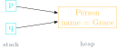

Definition
- Primitive types:
byte short int long float double char boolean, held by value. - Reference types: classes, interfaces, arrays. A variable holds a reference (or
null); assignment copies the reference, not the object. - Creation:
new C(args)allocates on the heap and runs a constructor. If no constructor is written, the compiler provides a no-argument one; writing any constructor removes it. - Destruction: none in the language. The garbage collector frees objects unreachable from the roots (stack variables, static fields).
finalize()is not a destructor (deprecated); resources are released explicitly withclose()and try-with-resources. - static: a field or method of the class, not of the instances (
Math.sqrt,System.out). A static method has nothisand can call only static members directly. - final: a variable assigned once;
static finalgives constants. - Arrays are objects:
int[] a = new int[n];witha.length; copying usesSystem.arraycopyorArrays.copyOf.
Example
Person p = new Person("Ada");
Person q = p; // same object
q.setName("Grace"); // p.getName() is "Grace" too
p = null; q = null; // the object is now unreachable: eligible for collectionPicture

Intuition
In Java every object variable is a pointer that you cannot do arithmetic on and never have to free.
Pitfall
== on references compares identity, not content: two distinct String objects with the same characters are not ==; content comparison is equals (see equals and hashCode).